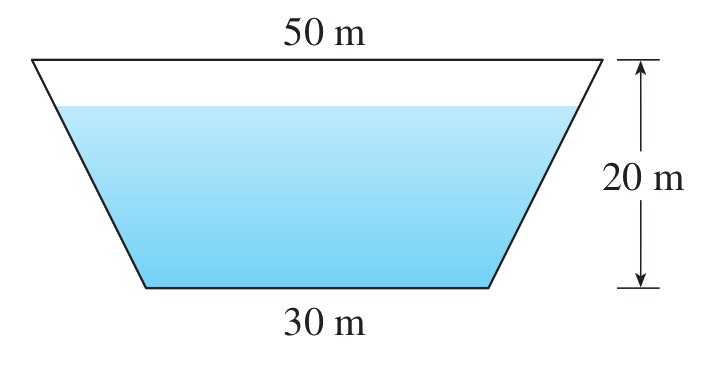
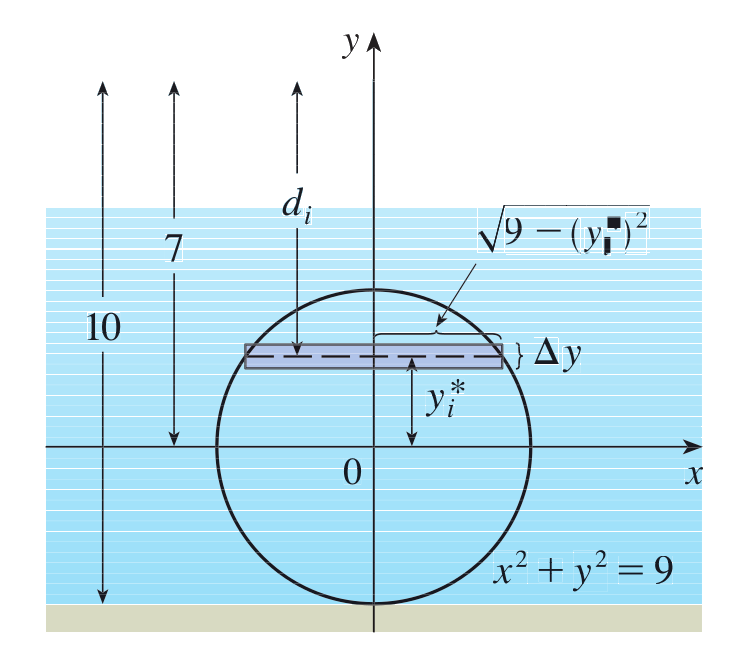

An isosceles triangular plate of glass with base-length 6m
and height 4m is submerged in water such that
its base is flush with the surface of the water.
Calculate the total amount of force due to hydrostatic pressure
that the plate is experiencing.
(Solution in Stewart)
A dam approximately has the shape of a trapezoid.
The height is 20m and the width is 50m at the top
and 30m at the bottom.
Find the force on the dam due to hydrostatic pressure
if the water level is 4m from the top of the dam.

Again consider the isosceles triangular plate of glass
from the first problem on this page.
Suppose that the plate is rated to withstand
1 million Newtons of force before shattering.
If we submerge the plate deeper and deeper into the water,
at what depth should we start worrying the plate will shatter?
(Solution in Stewart)
Calculate the hydrostatic force
on one end of a cylindrical drum with radius 3ft
if the drum is submerged in water 10ft deep.
